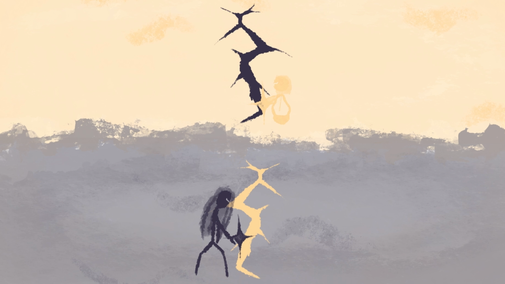
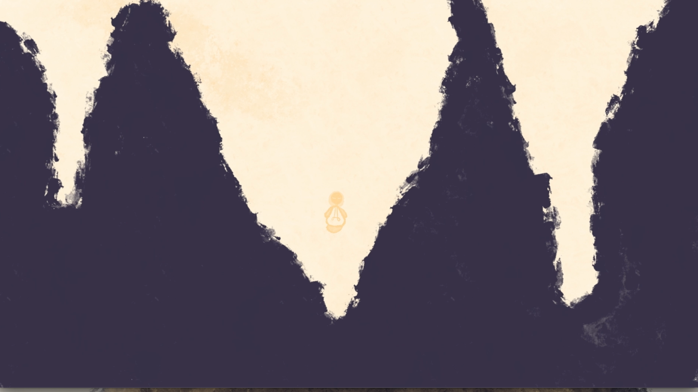

In diesem Kurzfilm werden Licht und Schatten als harmonische Gegensätze dargestellt, die einander brauchen.
Als sie versuchen, sich näherzukommen, gerät ihre Welt aus dem Gleichgewicht und sie werden getrennt.
Um wieder zueinanderzufinden, müssen sie lernen, Kompromisse einzugehen und ihre eigene Form der Verbindung zu finden.


Schatten-Charakter
Verzogene Proportionen, um verzerrten
Schattenwurf zu imitieren.